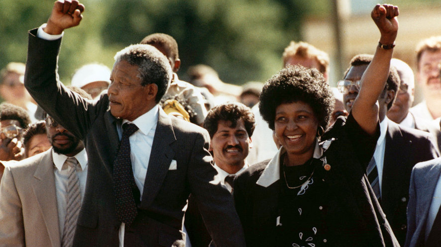

Youth Day in South Africa alludes to the commemoration of the Soweto youth uprising of the 16th of June 1976. This is where the youth of
1976 marched against a law imposed by the Bantu Education that compelled them to be taught in Afrikaans.
Afrikaans would be treated as equal to English as a communication medium of education in secondary schools. The Soweto June uprising impacted
other events that later resulted to the South Africa’s liberation from the apartheid regime. The socio-political landscape of South Africa
took a huge turnaround post the Soweto Uprising. Whereas,
the Soweto uprising itself had been influenced by another movement for freedom, the black consciousness movement whose leader was Steve Biko.
The 1976 Soweto uprising was
horrifically met by armed police who brutally murdered thousands of young people who were peacefully marching. Gruesome images displaying the
brutality of the apartheid police firing at these students were taken and surfaced. This only strengthened the struggle against the apartheid.
Black Consciousness Movement
Black Consciousness Movement (BCM) formed by Steve Biko, was South African anti-apartheid movement that began in the late 1960s.
Originating on university
campuses, it espoused Black cultural pride and political solidarity while firmly denouncing white liberal inactivity.
Though the movement began to decline after the Soweto Uprising in 1976 due to the death of its leader Steve Biko,
it left an enduring impression on resistance to apartheid in South Africa and ideas of Black identity and cultural
worth across the globe.
The international outcry
An international outcry, and condemnation of South Africa’s security laws led directly to the West’s decision to support the United Nations (UN)
Security Council vote to ban mandatory arms sales to South Africa (Resolution 418 of 4 November 1977). The South African problem had
been on the international agenda almost from the start of the United Nations, and was acknowledged as an international “problem” by
the Western powers after Sharpeville in 1960.
Freedom Day
Freedom Day on 27 April is an annual celebration of South Africa's first non-racial democratic elections of 1994.
It is significant because it marks the end of over three hundred years of colonialism, segregation and white minority
rule and the establishment of a new democratic government led by Nelson Mandela and a new state subject to a new constitution.
The holding of the first non racial elections was the culmination of years of struggle and a negotiated settlement which led
to the unbanning of the liberation organisations, the release of political prisoners and the return of exiles and the formal
all party negotiations which drafted an interim constitution.